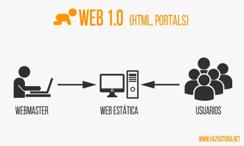

Se considera que en esta década comenzó oficialmente la Web 1.0. Web 1.0 se refiere a un estado de la World Wide Web. Es en general un término usado para describir la Web antes del impacto de la «fiebre punto com» en el 2001, que es visto por muchos como el momento en que el internet dio un giro.

En este año surge el protocolo HTTP. El Protocolo de transferencia de hipertexto (en inglés, Hypertext Transfer Protocol, abreviado HTTP) es el protocolo de comunicación que permite las transferencias de información a través de archivos (XHML, HTML…) en la World Wide Web. Fue desarrollado por el World Wide Web Consortium y la Internet Engineering Task Force.
En este año Tim Berners Lee creó la World Wide Web (La Web) o red informática mundial. La WWW es un sistema que funciona a través de Internet, por el cual se pueden transmitir diversos tipos de datos a través del Protocolo de Transferencia de Hipertextos o HTTP, que son los enlaces de la página web.
La primera propuesta oficial para convertir HTML en un estándar se realizó en 1993 por parte del organismo IETF (Internet Engineering Task Force).
En octubre de 1995, la empresa Amazon se anunció al público.
Google es uno de los buscadores más conocidos y la fecha exacta de su lanzamiento fue el 4 de septiembre de 1998. Después de un año de duro trabajo, sus creadores, Larry Page y Sergey Brin lanzaron al mercado un motor de búsqueda al que llamaron Google, aunque en 1997 los dos jóvenes estudiantes de la Universidad de Stanfors ya habían creado un prototipo de buscador al que habían llamado BackRub, pero ese mismo año, decidieron cambiarle el nombre inspirándose en el término matemático “gúgol” que hace referencia número 10 elevado a la potencia de 100. No fue hasta 1998 cuando estrenaron su motor de búsqueda y fundaron oficialmente la compañía, que desde sus inicios se caracterizó por ser una empresa que primó la responsabilidad corporativa, las políticas de igualdad y derechos de los empleados y creó nuevas formas de trabajo. Tras ese hecho su popularidad empezó a crecer notablemente y al poco tiempo ya había superado a otro de los más populares de la época, el AltaVista.
El término fue inventado por Darcy DiNucci en 1999 y luego popularizado por Tim O'Reilly y Dale Dougherty, en una conferencia sobre la Web 2.0 de O'Reilly Media en 2004.